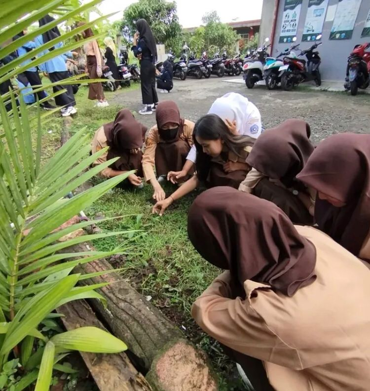
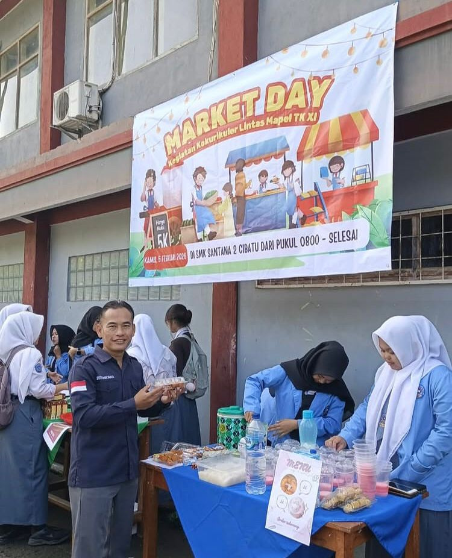
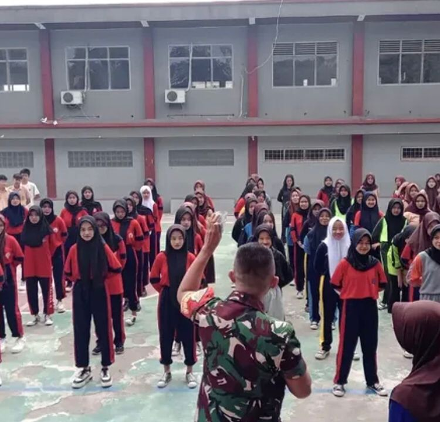
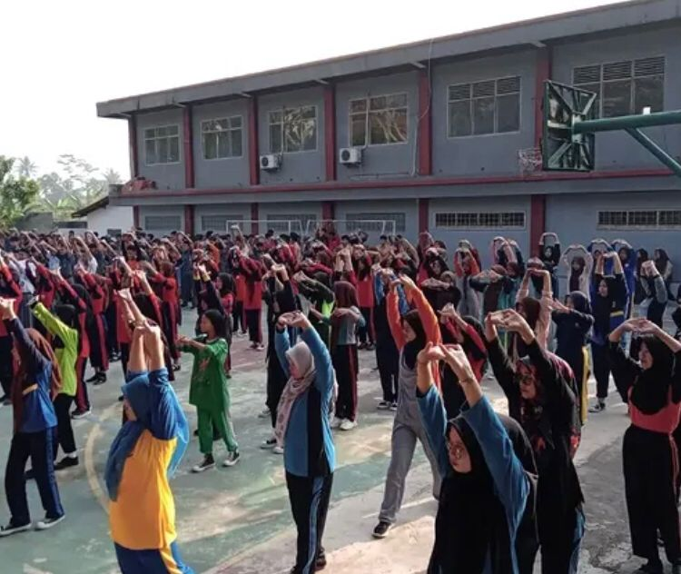
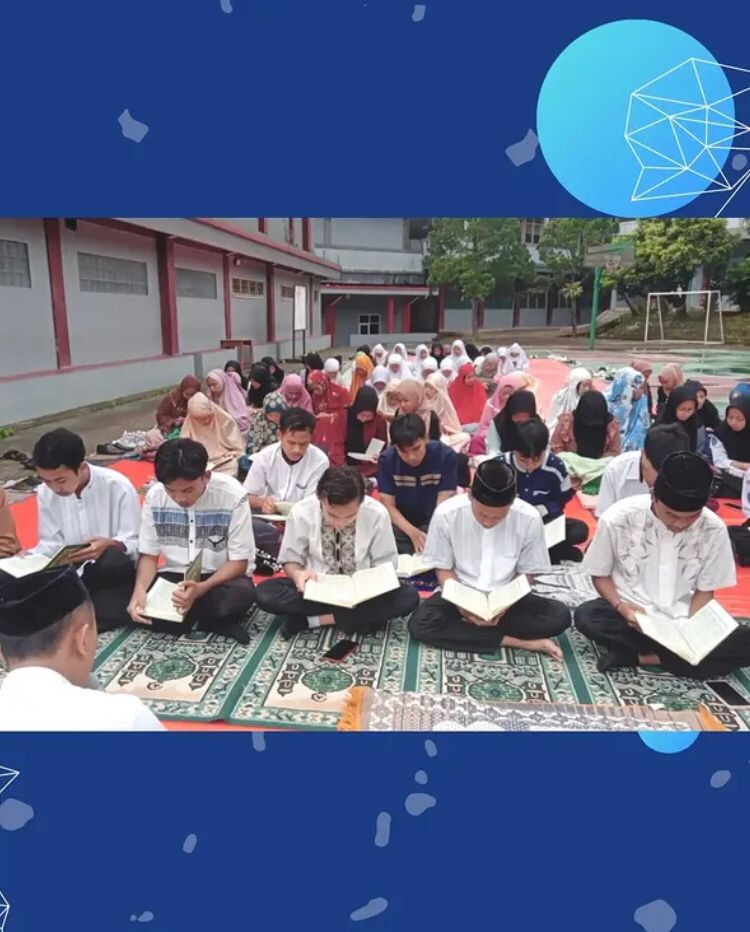

Mencetak Lulusan yang Kompeten, Berkarakter Industri, dan Unggul dalam Teknologi.
SMK Santana 2 Cibatu adalah sekolah kejuruan yang berdedikasi tinggi dalam mendidik siswa-siswi agar memiliki keahlian profesional. Dengan fasilitas modern dan kurikulum berbasis industri, kami siap mengantarkan siswa menuju dunia kerja maupun wirausaha.
Visi: Mewujudkan lembaga pendidikan yang religius, kompeten, dan mandiri.
Misi: Menyelenggarakan pendidikan teknik dan bisnis yang relevan dengan kebutuhan zaman.
Mempelajari coding, pembuatan aplikasi Android, Website, dan pengelolaan Database berskala industri.
Mempelajari administrasi perkantoran modern, manajemen kearsipan digital, dan komunikasi bisnis profesional.

Jumat Bersih

Market Day

Mentalitas Industri

Senam Pagi

Smartren Ramadhan
📍 Alamat: Jalan Siliwangi No.92, Keresek, Kecamatan Cibatu, Kabupaten Garut, Jawa Barat
📞 Telepon: (0262) 467956
✉️ Email: smk_santana2@yahoo.co.id